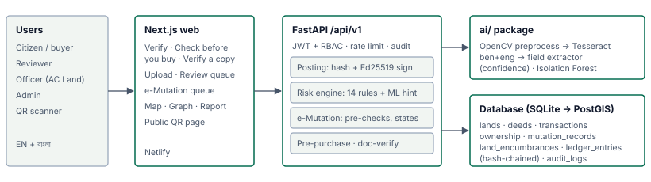
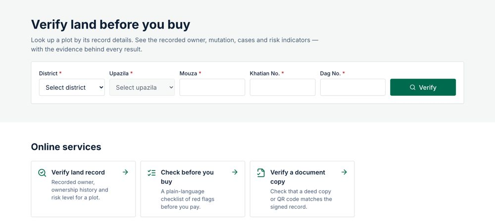
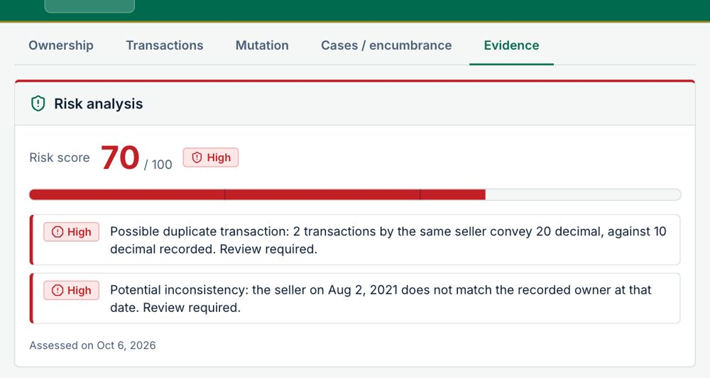
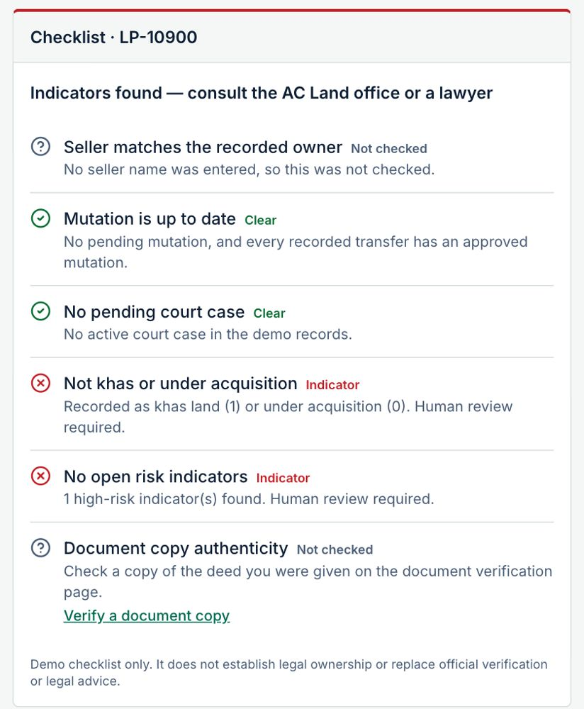
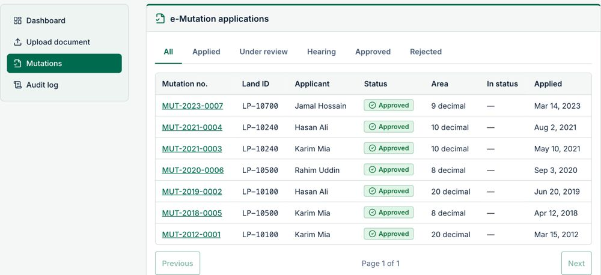
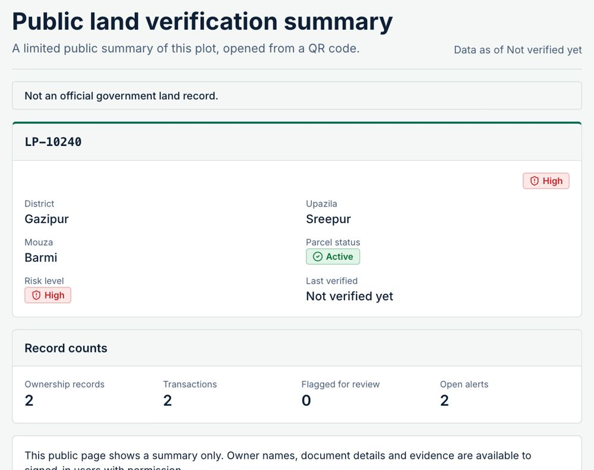
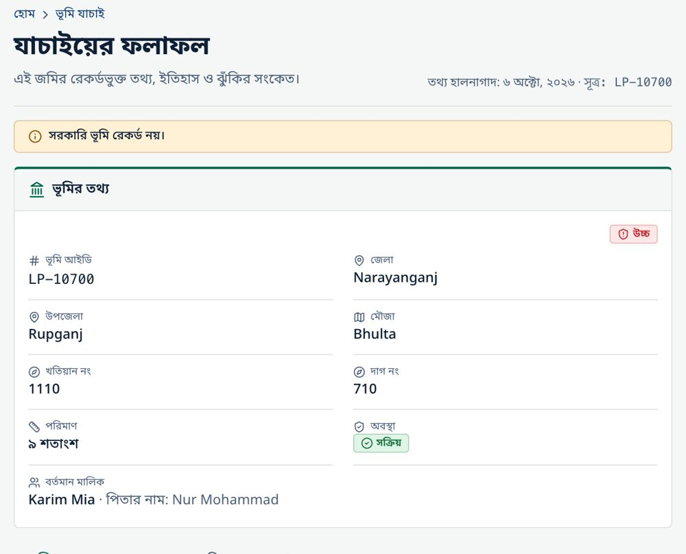

LandTech 2026 · Track: Digital Land Records, Verification & Digitization · Problem statement P3: Fraud & Double-Selling (supporting: P1, P2, P4, P5)
Team: DEEDGUARD · Live demo: https://land-sheild-bd.netlify.app/en · Code: https://github.com/A-42-018/LandSheild-BD · Video: VIDEO_URL
Demo prototype. All land, deed and person records are synthetic. LandShield gives risk indicators for a human to review; it does not establish ownership or replace official verification.
A plot in Bangladesh can be sold twice, sold by someone who is no longer the recorded owner, or "proved" with a copied or altered deed. These frauds work because the evidence is split: the sale deed is registered at the Sub-Registry office (Ministry of Law), while the ownership record (khatian) is updated through mutation (namjari) at the AC Land office (Ministry of Land). Nobody checks both sides automatically, so a buyer often learns of a second sale, a pending case or khas status only in court. LandShield targets the four P3 scenarios: same plot sold twice, rapid transfers, registration ↔ mutation mismatch, and forged or altered documents. It also covers parts of P1 (digitising deeds with OCR), P2 (signed records, hash-chained ledger, QR), P4 (deed → e-Mutation workflow) and P5 (a "check before you buy" for citizens).
Scan → Verify → Detect → Mutate → Citizen check
ben+eng, or a mock provider for offline demos) and a rules extractor fill 12 fields (deed no., date, district/upazila/mouza, khatian, dag, area, seller, buyer…), each with a confidence score.
| Layer | Stack |
|---|---|
| Frontend | Next.js 14 (App Router), TypeScript, Tailwind, next-intl (EN + BN), TanStack Query, Leaflet map, React Flow ownership graph |
| Backend | Python 3.11, FastAPI, SQLAlchemy 2 + Alembic (SQLite demo; Postgres/PostGIS planned), Pydantic 2, JWT + role-based access (citizen / reviewer / officer / admin), rate limits, audit log |
| AI / trust | Tesseract + OpenCV preprocessing, rule extractor, rapidfuzz name matching (Bangla-aware), scikit-learn Isolation Forest; SHA-256, Ed25519 signatures, hash-chained ledger |
| Quality / deploy | pytest, Vitest (350 tests), Playwright e2e (20 specs), ruff, tsc; Docker → Render (API), Netlify (web) |






Other features: ownership graph (one seller → two buyers), parcel map of Bangladesh (simplified open boundaries, not official; synthetic plots), a bilingual A4 report, verify-a-copy (Doc1 vs Doc1_altered → ALTERED: land_area), and a ledger tamper demo (edit a row → BROKEN at seq 7 → restore → INTACT).
| Measure (synthetic data) | Result |
|---|---|
| Rule engine, seeded fraud scenarios | precision 1.00, recall 1.00 (3/3 codes, 0 false positives) |
| Anomaly model, held-out split (2 000 rows) | precision 0.974 · recall 0.935 · F1 0.954 · ROC AUC 0.998 |
| OCR + extraction, 20 synthetic deeds (exact / fuzzy) | 30.0 % / 47.9 % of fields overall; 61.9 % / 94.0 % on clean English-label deeds |
Limitations (stated honestly). Every number comes from synthetic data. Bangla OCR accuracy has not been measured yet, and noisy scans currently fail extraction, which is why human review is mandatory. The anomaly score is not a probability. The ledger is only as strong as write access to the database (anchoring the chain head off-database comes next). The demo uses SQLite with no real registry integration. The free hosting tier sleeps, so the first request has a cold start.
| Stage | Scope | Integration |
|---|---|---|
| Pilot (6 months) | 1 upazila: 1 Sub-Registry + 1 AC Land office | Read-only registration and mutation feeds; digitise the pilot mouza's khatians |
| District (12 months) | 1 district | Live e-Mutation API, court cause-list feed, DC office khas register |
| National (24–36 months) | 64 districts | Permissioned ledger nodes at Sub-Registry / AC Land / DC offices; national search; mobile + SMS "check before you buy"; bank API for collateral checks |
Cross-cutting work: Postgres/PostGIS and horizontal scaling; Bangla OCR fine-tuned on anonymised archives (with legal approval); data protection by design (no personal data on public pages, hashed identifiers, audit trail); officer training. Expected impact: fewer double sales reaching court, faster mutation, and fewer broker visits for buyers.
| Name | Role |
|---|---|
| Alif Mahmud | Backend, risk engine, e-Mutation, ledger |
| Ayesha Hamid Mithila | Frontend, OCR pipeline, UI, deployment |
| — | Mentor: not assigned yet |
AI tool disclosure. Claude (Anthropic) helped write code, tests and documentation, phase by phase. The team reviewed, ran and edited everything. No generative AI runs at runtime, and all risk decisions come from deterministic, explainable rules.
Sources. [1] Daily Observer, "Land case backlog weighs on our legal system", 8 Nov 2025 (observerbd.com/news/552680). [2] HiiL & BRAC, Justice Needs and Satisfaction in Bangladesh, 2018 (brac.net). [3] TIB, Corruption in Service Sectors: National Household Survey 2023, 3 Dec 2024 (ti-bangladesh.org/en/articles/press-release/7136).